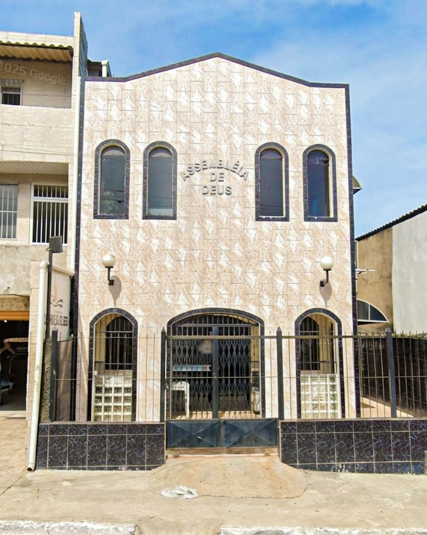

Assembleia de Deus · Boca da Mata
Uma igreja de portas abertas para você e sua família.
Venha adorar a Deus, aprender a Palavra e fazer parte de uma comunidade que caminha junto.

A paz do Senhor! Seja muito Bem-vindo ao site da Asssembleia de Deus em Boca da Mata - Ad Boca da Mata 1
Quem somos
Uma igreja que ama a Palavra de Deus e as pessoas.
[Escreva aqui a história da igreja: ano de fundação, como começou e quem a fundou.]
Nossa missão é reunir pessoas em oração, adoração e estudo da Palavra, para que cada família seja restaurada por Deus e viva o Evangelho de Jesus. Valorizamos a Palavra, a oração, a comunhão e o acolhimento, de portas abertas para todos.